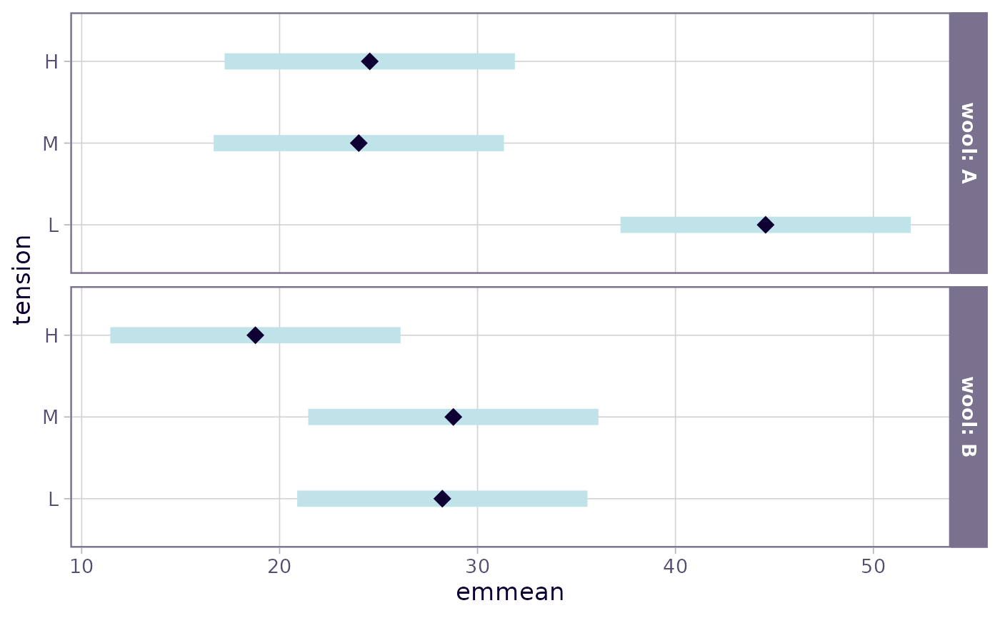
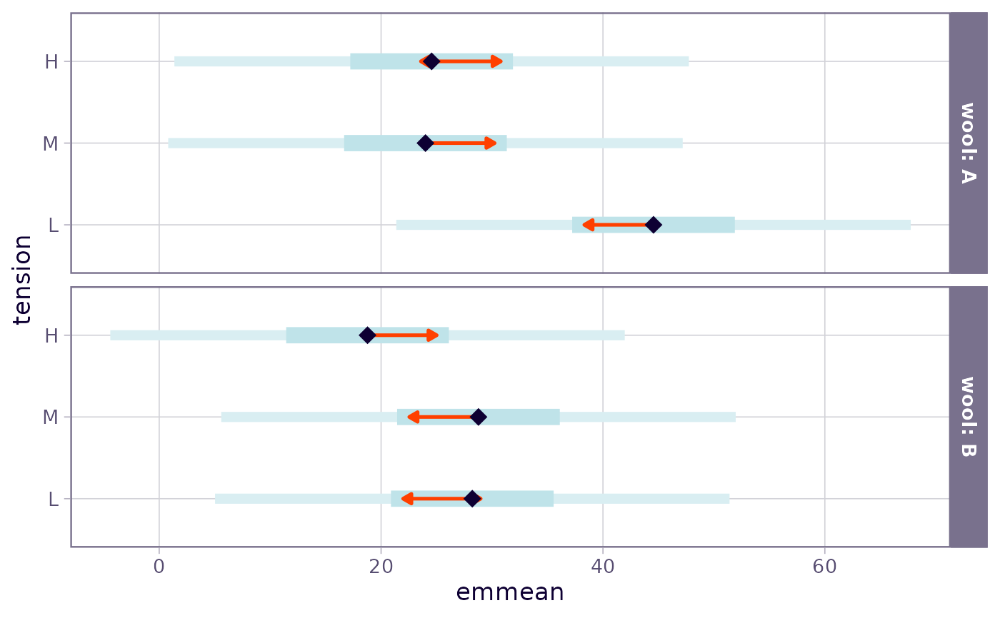
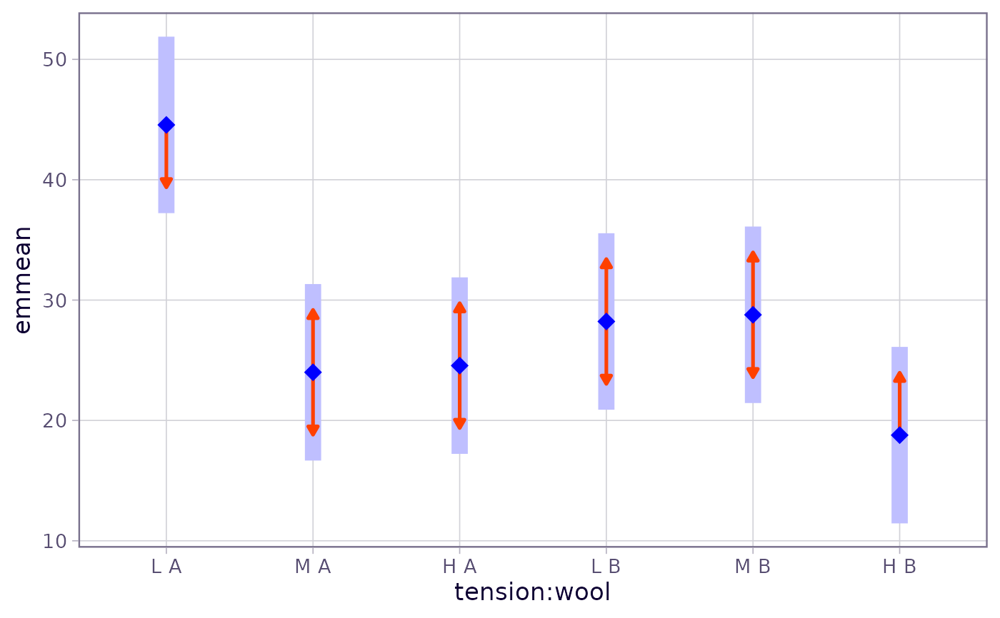
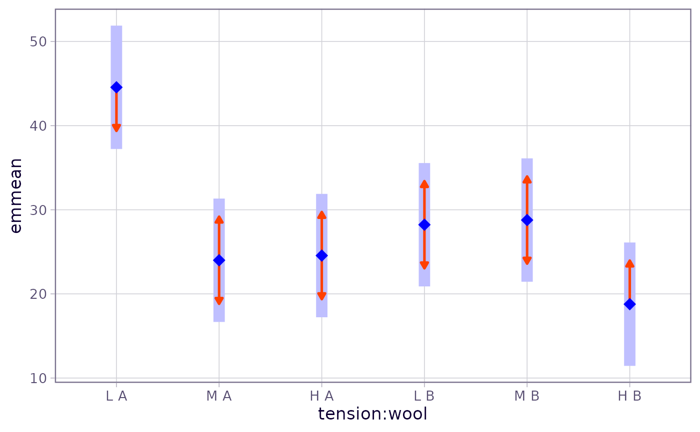

Methods are provided to plot EMMs as side-by-side CIs, and optionally to display “comparison arrows” for displaying pairwise comparisons.
Usage
# S3 method for class 'emmGrid'
plot(x, y, type, CIs = TRUE, PIs = FALSE,
comparisons = FALSE, colors, alpha = 0.05, adjust = "tukey",
int.adjust = "none", intervals, ...)
# S3 method for class 'summary_emm'
plot(x, y, horizontal = TRUE, CIs = TRUE, xlab, ylab,
layout, scale = NULL, colors, intervals, plotit = TRUE, ...)Arguments
- x
Object of class
emmGridorsummary_emm- y
(Required but ignored)
- type
Character value specifying the type of prediction desired (matching
"linear.predictor","link", or"response"). See details undersummary.emmGrid. In addition, the user may specifytype = "scale", in which case a transformed scale (e.g., a log scale) is displayed based on the transformation or link function used. Additional customization of this scale is available through including arguments toggplot2::scale_x_continuousin....- CIs
Logical value. If
TRUE, confidence intervals are plotted for each estimate.- PIs
Logical value. If
TRUE, prediction intervals are plotted for each estimate. Ifobjectis a Bayesian model, this requires the...arguments to includefrequentist = TRUEandsigma =(some value). Note that thePIsoption is not available withsummary_emmobjects – only foremmGridobjects. Also, prediction intervals are not available withengine = "lattice".- comparisons
Logical value. If
TRUE, “comparison arrows” are added to the plot, in such a way that the degree to which arrows overlap reflects as much as possible the significance of the comparison of the two estimates. (A warning is issued if this can't be done.) Note that comparison arrows are not available with `summary_emm` objects.- colors
Optional character vector of colors to use for estimates, CIs, PIs, and comparison arrows, respectively. If missing, these are derived from
ink,paper, andaccentin the theme'sgeomelement.inkis used for the estimates,accentis used for comparison arrows, and a contrasting color toaccentis blended withpaperfor the intervals. If just one color is given, estimates and intervals are made from various blends of that color andpaper, andaccentcolor is used for comparison arrows.- alpha
The significance level to use in constructing comparison arrows
- adjust
Character value: Multiplicity adjustment method for comparison arrows only.
- int.adjust
Character value: Multiplicity adjustment method for the plotted confidence intervals only.
- intervals
If specified, it is used to set
CIs. This is the previous argument name forCIsand is provided for backward compatibility.- ...
Additional arguments passed to
update.emmGrid,summary.emmGrid,predict.emmGrid, ordotplot- horizontal
Logical value specifying whether the intervals should be plotted horizontally or vertically
- xlab
Character label for horizontal axis
- ylab
Character label for vertical axis
- layout
Numeric value passed to
dotplotwhenengine == "lattice".- scale
Object of class
trans(in the scales package) to specify a nonlinear scale. This is used in lieu oftype = "scale"when plotting asummary_emmobject created withtype = "response". This is ignored with other types of summaries.- plotit
Logical value. If
TRUE, a graphical object is returned; ifFALSE, a data.frame is returned containing all the values used to construct the plot.
Value
If plotit = TRUE, a graphical object is returned.
If plotit = FALSE, a data.frame with the table of
EMMs that would be plotted. In the latter case, the estimate being plotted
is named the.emmean, and any factors involved have the same names as
in the object. Confidence limits are named lower.CL and
upper.CL, prediction limits are named lpl and upl, and
comparison-arrow limits are named lcmpl and ucmpl.
There is also a variable named pri.fac which contains the factor
combinations that are not among the by variables.
Note
In order to play nice with the plotting functions,
any variable names that are not syntactically correct (e.g., contain spaces)
are altered using make.names.
Details
If any by variables are in force, the plot is divided into separate
panels. For
"summary_emm" objects, the ... arguments in plot
are passed only to dotplot, whereas for "emmGrid"
objects, the object is updated using ... before summarizing and
plotting.
In plots with comparisons = TRUE, the resulting arrows are only
approximate, and in some cases may fail to accurately reflect the pairwise
comparisons of the estimates – especially when estimates having large and
small standard errors are intermingled in just the wrong way. Note that the
maximum and minimum estimates have arrows only in one direction, since there
is no need to compare them with anything higher or lower, respectively. See
the vignette("xplanations",
"emmeans") for details on how these are derived.
If adjust or int.adjust are not supplied, they default to the
internal adjust setting saved in pairs(x) and x
respectively (see update.emmGrid).
Examples
warp.lm <- lm(breaks ~ wool * tension, data = warpbreaks)
warp.emm <- emmeans(warp.lm, ~ tension | wool)
plot(warp.emm)

plot(warp.emm, PIs = TRUE, comparisons = TRUE)

with_emm_options(gg.theme = ggplot2::theme_dark(),
plot(warp.emm, PIs = TRUE, comparisons = TRUE))
 plot(warp.emm, by = NULL, comparisons = TRUE, adjust = "none",
horizontal = FALSE, colors = "blue")

### Using a transformed scale
pigs.lm <- lm(log(conc + 2) ~ source * factor(percent), data = pigs)
pigs.emm <- emmeans(pigs.lm, ~ percent | source)
plot(pigs.emm, type = "scale", breaks = seq(20, 100, by = 10))
plot(warp.emm, by = NULL, comparisons = TRUE, adjust = "none",
horizontal = FALSE, colors = "blue")

### Using a transformed scale
pigs.lm <- lm(log(conc + 2) ~ source * factor(percent), data = pigs)
pigs.emm <- emmeans(pigs.lm, ~ percent | source)
plot(pigs.emm, type = "scale", breaks = seq(20, 100, by = 10))
 # Based on a summary.
# To get a transformed axis, must specify 'scale'; but it does not necessarily
# have to be the same as the actual response transformation
pigs.ci <- confint(pigs.emm, type = "response")
plot(pigs.ci, scale = scales::log10_trans())
# Based on a summary.
# To get a transformed axis, must specify 'scale'; but it does not necessarily
# have to be the same as the actual response transformation
pigs.ci <- confint(pigs.emm, type = "response")
plot(pigs.ci, scale = scales::log10_trans())